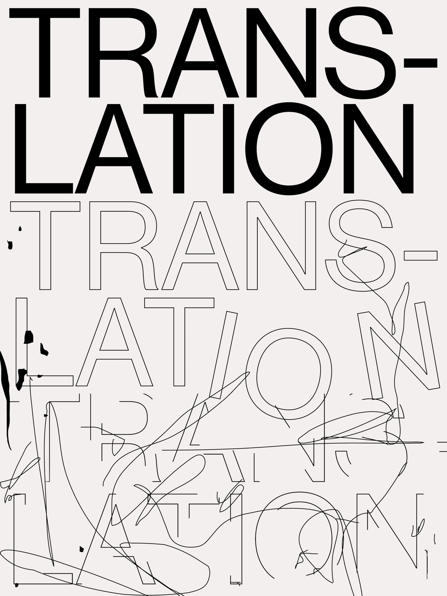
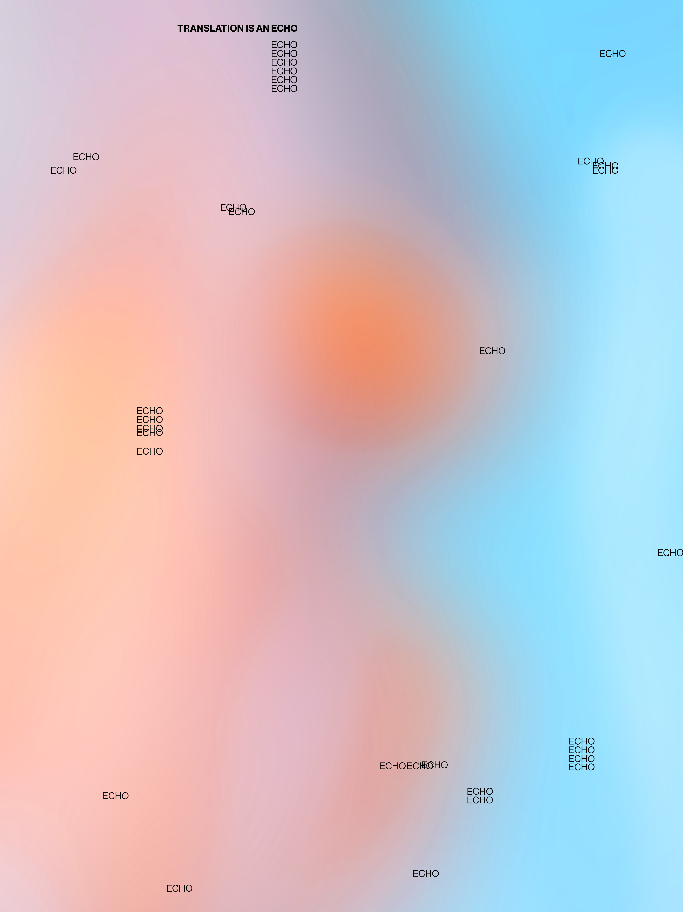
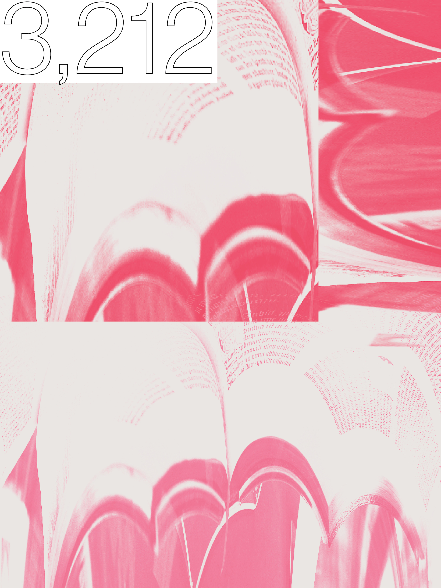
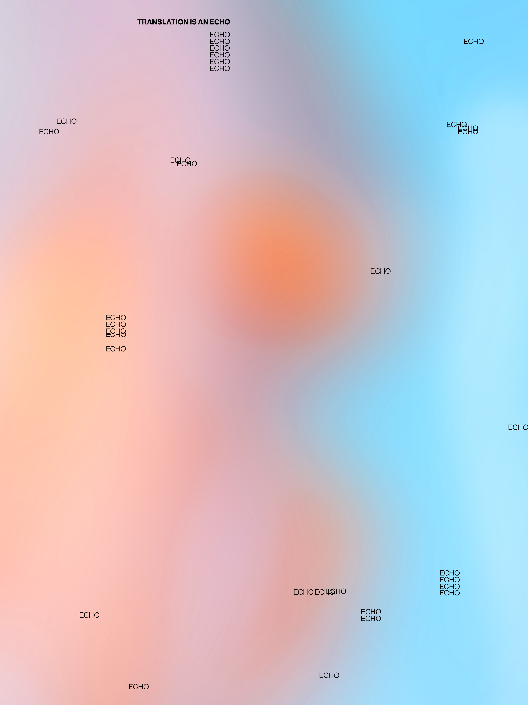
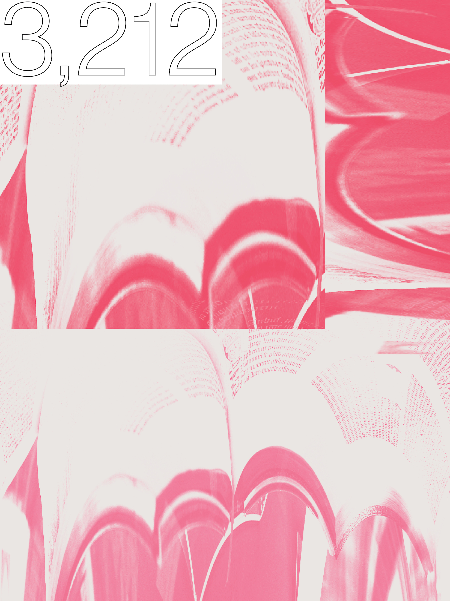
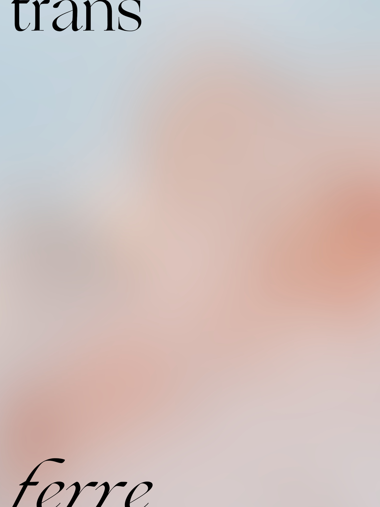
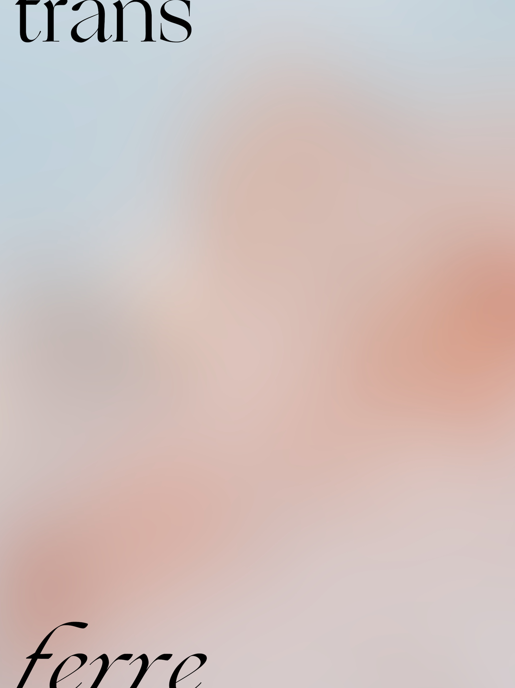

Lost Code is a graphic design project exploring the friction in translation.
Fidelity (or "faithfulness") and transparency are dual ideals in translation that are often at odds. A 17th-century French critic coined the phrase "les belles infidèles" to suggest that translations, like women, can be either faithful or beautiful, but not both.
These enlarged images are a series of posters I designed that explores this idea. You are to drag them around and view it. However, you cannot resize to see the whole picture. Your cursor is also followed by a trace. These all adds up to the frictional experience that resembles reading a translated text.
Design and concept by Hilda Wong; developed by Ellen Lo.

 



 
